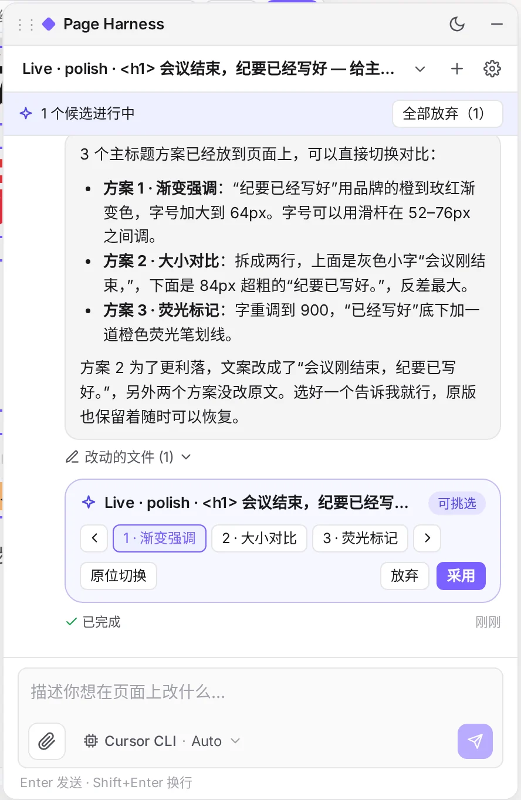
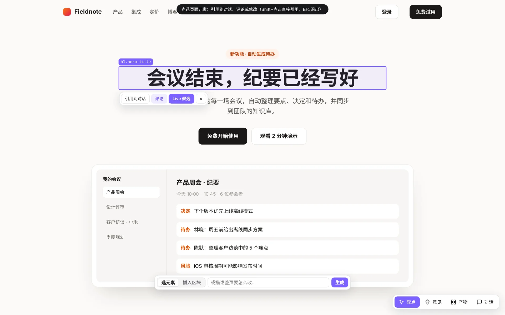
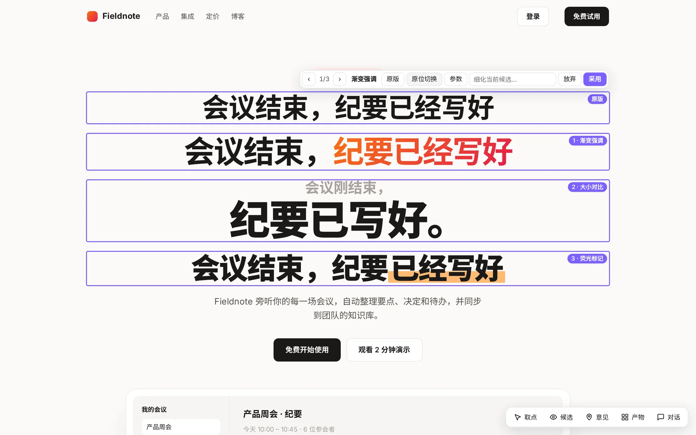
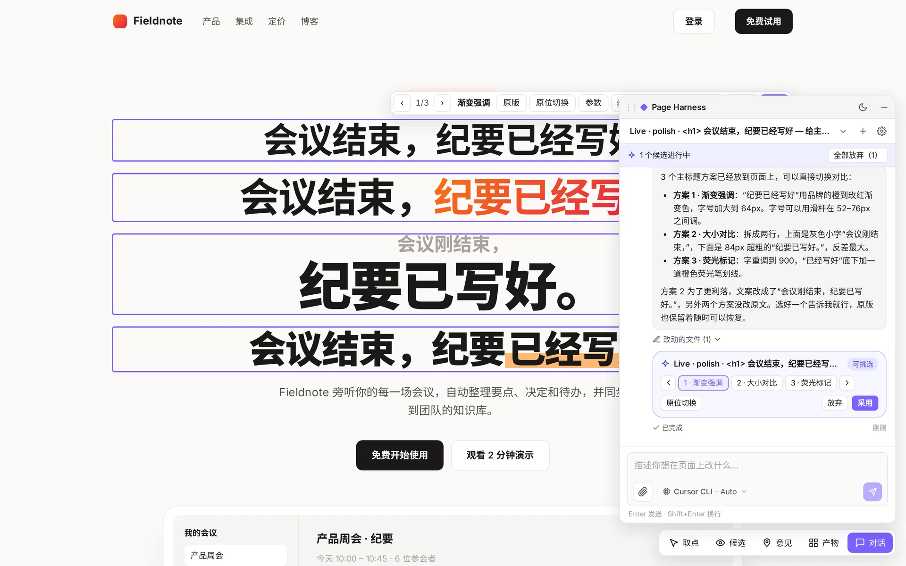
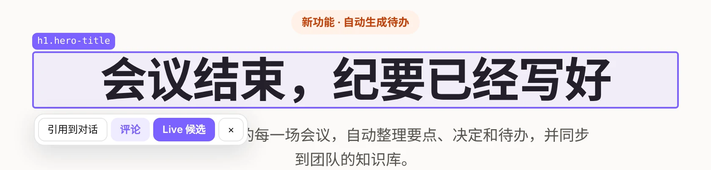
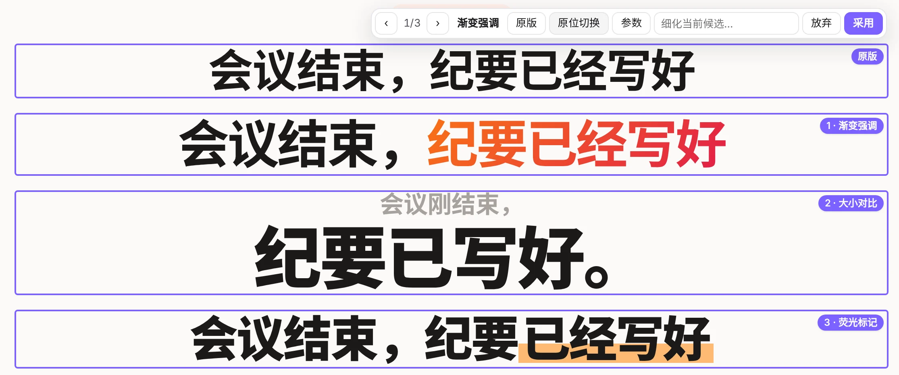
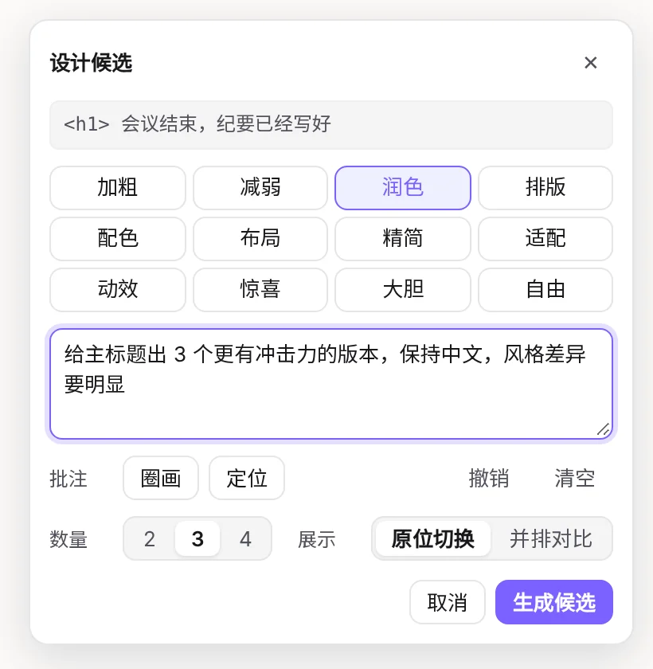
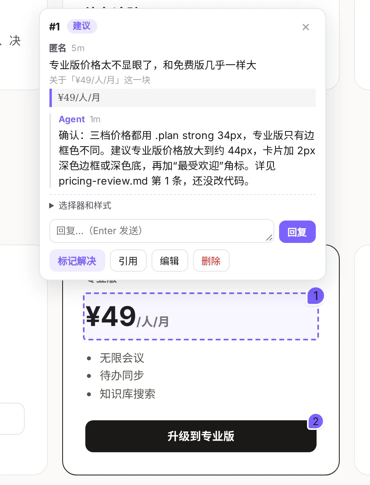
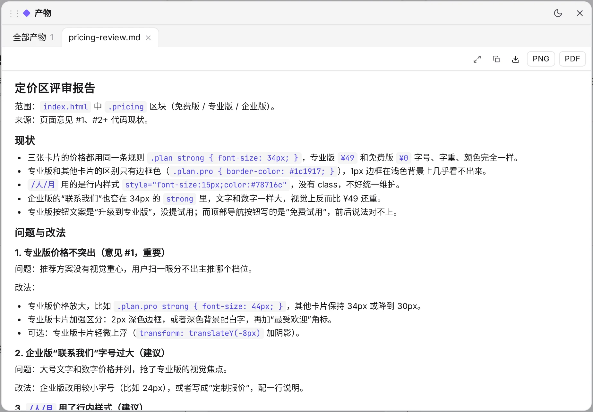

对话
一个会说清楚自己在做什么的窗口
流式回复、工具卡片、改动文件列表、附件和排队消息。每个会话可以用不同的 Agent 和模型。

给任意正在运行的前端地址，页面右下角多出一个底栏。点选元素、说一句要什么，你本机的编码 Agent 直接写进源码。



以上均为真实运行截图：Cursor Agent 在一个示例页面上工作。
取点
选中的元素连同选择器、文字和 HTML 一起交给 Agent。接下来怎么处理，由你决定。

Live 候选
Agent 把 2–4 个候选直接写进你的源码，开发服务器热更新后就在页面上。原位切换、并排对比、调参数，满意哪个就采用哪个。


候选包在一个临时容器里，你看到的就是代码真正渲染出来的样子。
在原来的位置逐个切换，或者全部摊开对比；还能接着细化某一个。
保留选中的版本，其余和标记一并清除。留下残余时会提醒，也可以用 git 钩子拦住。
<!-- Live 进行中，源码里是这样的 -->
<div data-ph-live="L1a2b3c4" style="display:contents">
<h1 data-ph-variant="0" hidden>会议结束，纪要已经写好</h1>
<h1 data-ph-variant="3" data-ph-variant-label="荧光标记">…</h1>
</div>评审
在元素上留评论、改文字和样式。队友用 --share 链接从局域网加入，Agent 读完意见，回复、修改、标记解决。

对话
流式回复、工具卡片、改动文件列表、附件和排队消息。每个会话可以用不同的 Agent 和模型。

产物
Agent 写出的 Markdown、HTML 原型、JSON 和图片都有版本，可预览、下载，或导出 PNG / PDF。

Agent
不需要 API Key，也不用新账号。page-harness 调用本机现成的命令行工具，自动识别装了哪些。
claude -p
codex app-server
cursor-agent -p
原理
不改你的项目，也不需要沙箱。HMR 和 WebSocket 照常工作。